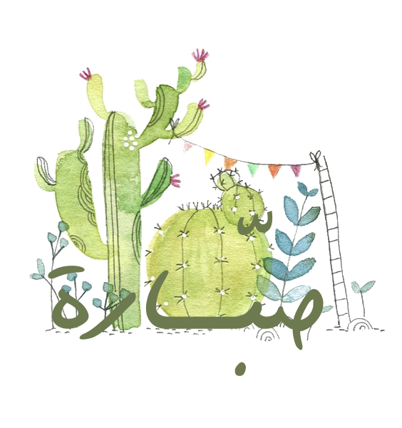

مصطلحات النباتات
مشاكل النباتات وحلولها
ضوء مرشح
الضوء الذي يأتي من النافذة ماراً بستارة خفيفة للتقليل من حرارته وحدته
الضوء الساطع
الضوء القوي بدون أشعة شمس مباشرة
ضوء خافت
الضوء القليل البعيد عن مصادر الاضاءة الطبيعية أو الصناعية.
فترة النمو النشط
الوقت الذي ينتج فيه النبات أفرع وأزهار وأوراق جديدة بشكل ملحوظ تكون طوال العام عادةً عدا فصل الشتاء
فترة السكون
الوقت الذي يتوقف فيه النبات عن إنتاج أفرع وأوراق وأزهار جديدة (ساكن), عادةً تكون خلال فصل الشتاء
عقدة
بروز واضح يحيط بالساق ويتكرر على مسافات منتظمة من الساق
قِنَّاْبَة
الورقة من النبات تكون تحت الزهرة مباشرةً وتظهر أحياناً بألوان مميزة تطغى على لون الأزهار التي قد تكون غير واضحة لصغرها
ريزومات
ساق أفقية على التربة تنتج جذوراً لأسفل وساق قائمة وأوراق وأفرع للأعلى
قلف
القلف هو قشرة الساق
مشاكل النباتات وحلولها
المشكلة
السبب المتوقع
الحل المقترح
تعليقات
تساقط الأوراق
تغير مفاجئ في درجة الحرارة
تعرضها لتيار قوي (بارد أوحار) جفاف الجذور لسبب ما (أثناء النقل مثلاً)
ينقل النبات إلى مكان مناسب بعيد عن التيارات ومصادر الحرارة وتوفر له الرطوبة المناسبة والضوء حسب حاجته.
أحياناً يكون تساقط الورق ظاهرة طبيعية كأحد وسائل الإخراج في النبات.
تحول أطراف الأوراق وحوافها إلى اللون الأسود
جفاف الهواء المحيط
أو عدم الانتظام بالري
يوضع الأصيص فوق حوض يحتوي على حصى متساوي الحجم ومبلل
ترش الأوراق بالرذاذ بشكل متكرر (مرتين يومياً مثلاً)
الانتظام بالري
تحصل مثل هذه المشكلة للنباتات ذات الأوراق الرفيعة أكثر من غيرها
ذبول الأوراق
الجفاف (العطش) المفرط أو الإغراق (ري مفرط)
عند الجفاف يوضع الأصيص في حوض ماء لمدة كافية لإنعاشه حتى يرتوي (حسب حجم الأصيص) فقد تحتاج عشر دقائق وقد تحتاج ساعة!
وعند الري المفرط تنقل النبتة إلى حوض يحتوي على تربة جافة كي تمتص الرطوبة الزائدة
المحافظة على ري النبتة بانتظام وبكميات متوازنة
ظهور بقع سوداء على الأوراق
تعرضها المباشر لأشعة الشمس اللاسعة
تقطع الأجزاء السوداء وعند نقل النبتة من بيئة لأخرى يجب مراعاة التدرج في التعرض للضوء
لا تنقل من منطقة قليلة الضوء إلى منطقة شديدة الإضاءة فجأة!
تجعد والتفاف في حواف الأوراق
الإضاءة شديدة جداً
انقل الأصيص إلى مكان أقل ضوءاً
عدم التعرض لأشعة الشمس المباشرة
إصفرار الأوراق وتساقطها
التعرض لتيار هوائي مباشر
أو السقي فوق الحاجة
أبعد النبتة عن مصدر التيار
قلل كمية السقي
أحياناً يكون تساقط الورق ظاهرة طبيعية كأحد وسائل الإخراج في النبات
إذا اصفرت الورقة ككتلة واحدة وكانت متشبعة رطوبة فهذا دليل على زيادة كمية الماء عن الحاجة